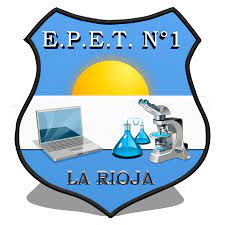

E.P.E.T. N°1 - LA RIOJA
PROYECTO INTEGRADOR
1er. CUATRIMESTRE 2022
ALUMNO: Urbano Daniel - CURSO:4to. - 3ra.
SISTEMAS II
Un sistema es un conjunto de elementos relacionados entre sí que funciona como un todo. Si bien cada uno de los elementos de un sistema puede funcionar de manera independiente, siempre formará parte de una estructura mayor. Del mismo modo, un sistema puede ser, a su vez, un componente de otro sistema.

Aunque la Teoría General de Sistemas (TGS) puede remontarse a los orígenes de la ciencia y la filosofía, sólo en la segunda mitad del siglo XX adquirió tonalidades de una ciencia formal gracias a los valiosos aportes teóricos del biólogo austríaco Ludwig von Bertalanffi (1901-1972).
TEMAS VISTOS EN EL AÑO
GOOGLE SITES
Google Sites es una aplicación gratuita que pone a disposición de los usuarios Google para que puedan crear sus webs de manera sencilla, práctica y gratis. Se puede personalizar, añadir un dominio y crear una página desde cero de manera eficaz. Google es el líder por excelencia de los buscadores.
.jpg)
SITE123
SITE123 es una empresa que nació del deseo de hacer que el proceso de creación de páginas web sea simple, fácil y accesible para prácticamente cualquier persona, independientemente de sus conocimientos técnicos en programación, diseño web y otras disciplinas relacionadas con la creación de páginas web.
.jpg)
WIX
Wix es una plataforma online que ofrece una serie de herramientas para la creación de sitios web profesionales de forma rápida y sencilla. Gracias a funciones preestablecidas y la elección de plantillas personalizables, se puede construir una web en muy poco tiempo y con unos resultados de gran calidad.
.png)
ADALO
Adalo es una herramienta no-code que te permite construir apps nativas sin código. Gracias a su constructor visual es posible crear componentes de una manera sencilla y visual, añadiendo lógica, flujos, bases de datos o usuarios de una manera rápida, aunque con ciertas limitaciones en cuanto al diseño.
.png)
GENIAL.LY
Genial.ly es una herramienta que nos permite generar contenidos digitales interactivos sin necesidad de programar y sin tener conocimientos de diseño.